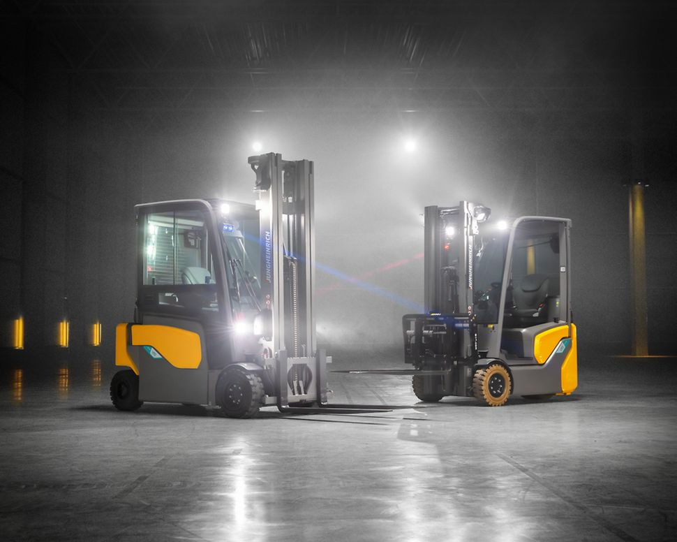
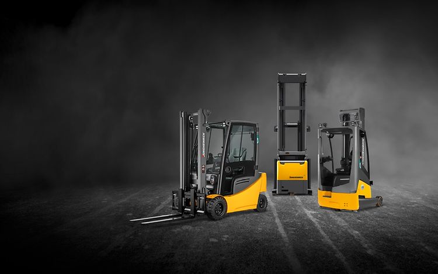
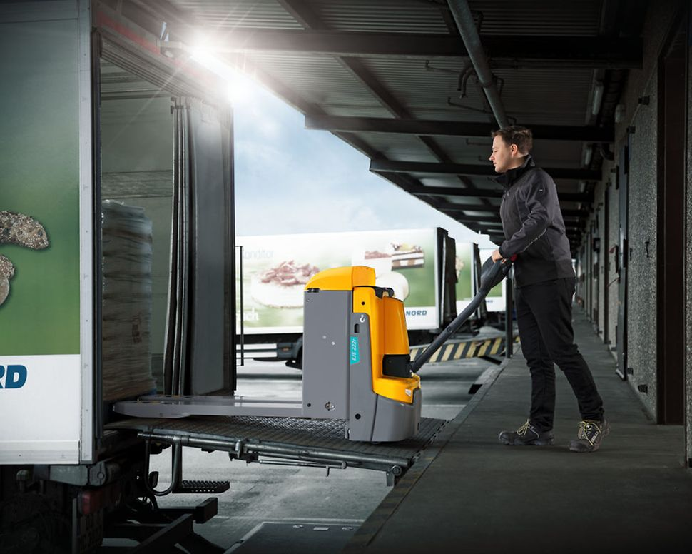
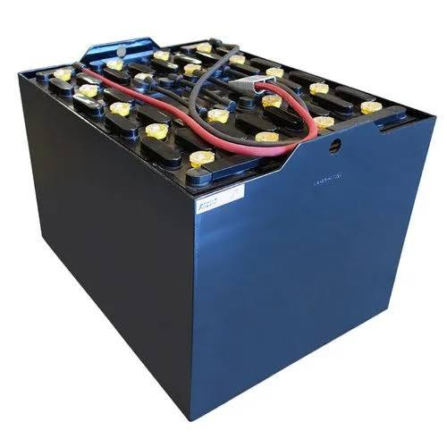
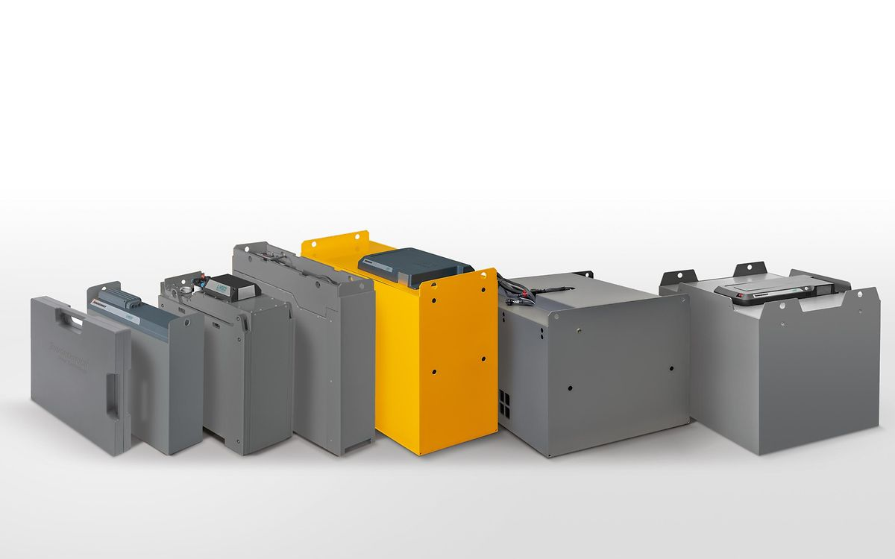
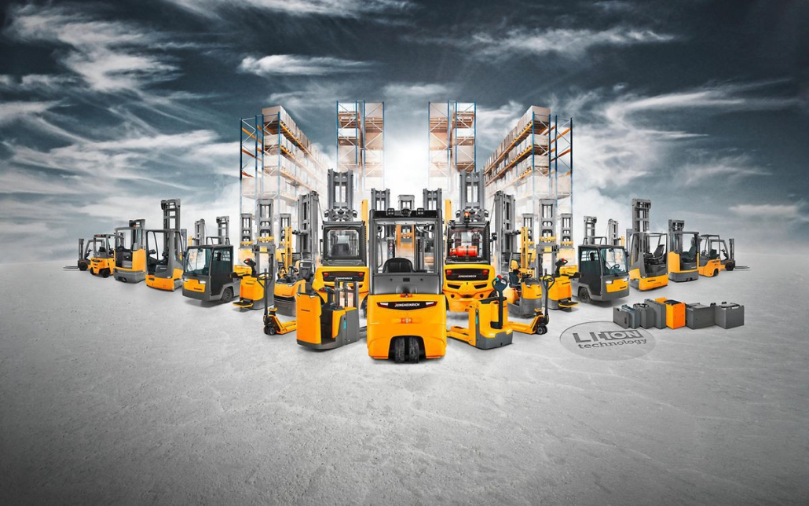
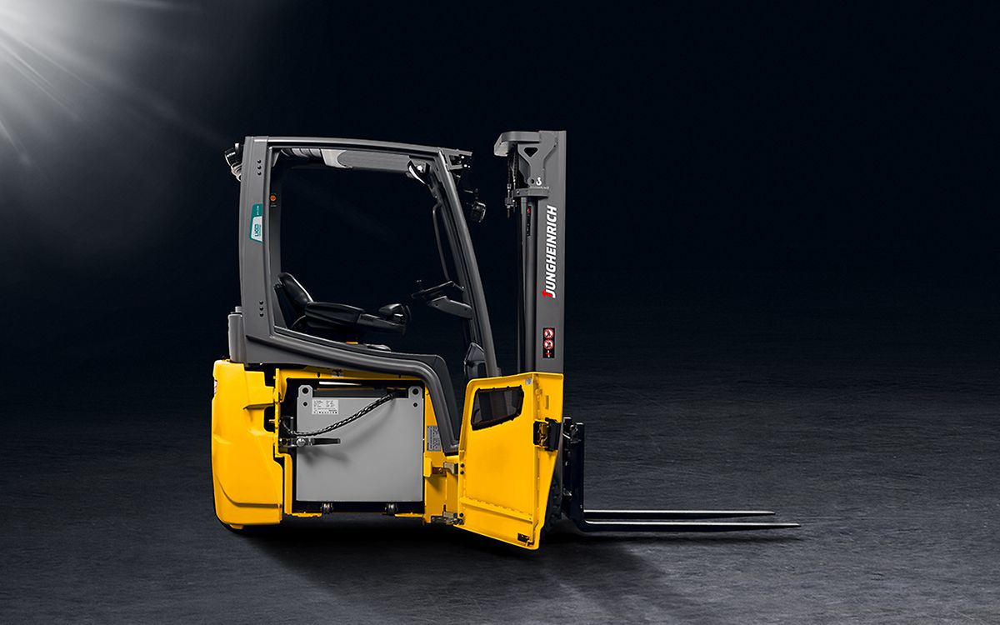

SIGNAL 01
Battery tidak lagi bertahan sepanjang pola kerja.
Jika unit kehilangan daya lebih cepat dari biasanya, kondisi penggunaan dan charging perlu dibaca bersama sebelum menyimpulkan penyebab.
Charging terasa makin lama, battery cepat drop, atau downtime mulai berulang? BIP membantu mengubah gejala operasional menjadi assessment terstruktur—agar Anda punya dasar teknis sebelum menentukan inspeksi, maintenance, atau evaluasi teknologi battery.

Tujuan landing page ini bukan membuat Anda langsung membeli battery. Tujuannya membantu Anda tahu kapan kondisi operasional sudah layak diperiksa lebih serius.
Jika unit kehilangan daya lebih cepat dari biasanya, kondisi penggunaan dan charging perlu dibaca bersama sebelum menyimpulkan penyebab.
Durasi charging dan kebutuhan availability harus dilihat dalam konteks jumlah shift, jam kerja, serta pola penggunaan unit.
Keluhan yang muncul berulang perlu dicatat sebagai sinyal untuk inspeksi dan verifikasi teknis, bukan dianggap kejadian terpisah.
Mulai dari brand yang Anda gunakan. BIP tetap membaca kondisi berdasarkan data unit dan penggunaan yang Anda masukkan—bukan berdasarkan logo merek.
Reach truck, counterbalance, dan pallet mover bekerja dengan pola penggunaan yang berbeda. Assessment membantu menghubungkan tipe unit dengan kondisi battery yang dilaporkan.

REACH / WAREHOUSE APPLICATION
PALLET TRANSPORTTeknologi battery bukan keputusan yang berdiri sendiri. BIP membantu membaca kondisi, shift, charging, maintenance, dan kebutuhan availability sebelum pembahasan bergerak ke opsi battery berikutnya.


Tujuannya bukan memilih teknologi paling mahal. Tujuannya menemukan langkah yang paling masuk akal berdasarkan kondisi operasi Anda—dengan data yang cukup untuk percakapan teknis berikutnya.
Cek Kondisi Battery Saya →Penggantian battery, kondisi fisik, tipe aplikasi, dan pola penggunaan adalah bagian dari konteks yang perlu dibaca bersama sebelum mengambil keputusan.


BIP relevan untuk operasi yang tidak bisa menganggap masalah battery sebagai gangguan kecil—terutama ketika forklift menjadi bagian penting dari aliran produksi, warehouse, dan distribusi.
Tidak perlu registrasi panjang. Masukkan kondisi yang Anda ketahui, baca hasilnya, lalu putuskan apakah perlu pemeriksaan atau technical assessment lanjutan.
Mulai assessment berdasarkan kondisi unit Anda. Hasilnya membantu menyusun langkah pemeriksaan berikutnya tanpa menampilkan harga dan tanpa keputusan pembelian otomatis.